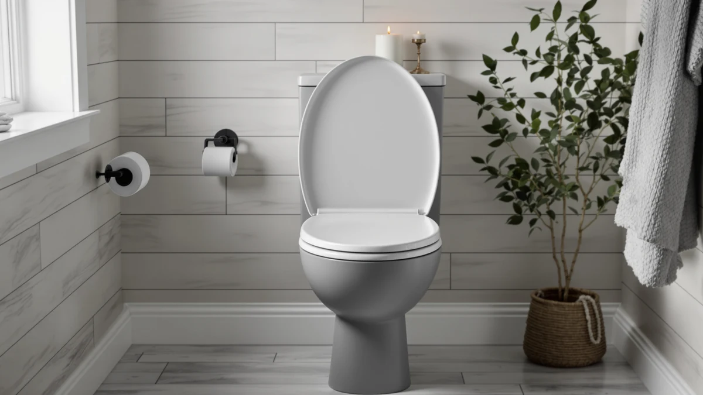

Best Kohler vs Bemis Toilet Seats (2026) | Best Toilet Seats
Prices and picks verified as of August 2026. Independent, reader-supported reviews.


Things to Know Before You Buy
- Both brands make round and elongated seats. Measure from the mounting bolts to the front rim before you order: about 16.5 inches means round, about 18.5 inches means elongated.
- Bemis builds toilet seats as its core business and molds most models in the USA. Kohler is a full plumbing brand, so its seats match Kohler bowls closely.
- Expect to pay $18.56 to $28.19 for the Bemis seats in this comparison and $31.44 to $63.54 for the Kohler models.
- Both brands offer slow-close hinges and tool-free removal for cleaning. Bemis calls its fastening system STA-TITE; Kohler calls its quick-release ReadyLatch.
The Kohler vs Bemis toilet seats question comes up in almost any seat replacement, because these two Wisconsin companies dominate the hardware aisle. Kohler sells the whole bathroom, from toilets to faucets, and prices its seats between $31.44 and $63.54. Bemis builds toilet seats as its core business and sells two of the models here for under $29. Both make solid products, which is why so many shoppers stall at this decision.
We compared six current models, four from Kohler and two from Bemis, using spec sheets, warranty terms, and the owner feedback behind more than 140,000 Amazon ratings. The short version: Bemis gives you more seat per dollar, while Kohler gives you a more refined closing mechanism and a cleaner match if you own a Kohler toilet. The sections below show where each brand earns its price.
Quick Answer
Bemis is the better buy for most bathrooms, and Kohler is the better fit for Kohler toilets and premium features. The Bemis 1500EC gets you an enameled wood seat with tool-free Lift-Off hinges for $18.56, less than half the price of a comparable Kohler. Pick Kohler when you want the smoothest slow-close action, a raised seat like the Hyten, or an exact match for a Kohler bowl.
What is Kohler?
Kohler has built plumbing fixtures in Kohler, Wisconsin since 1873, and its toilet seats sit inside a catalog that covers toilets, faucets, tubs, and showers. That breadth shapes the lineup: Kohler engineers its seats to match the bowl dimensions and colors of its own toilets first, which is why a Cachet or Brevia looks factory-original on a Kohler bowl.
The Kohler toilet seats in this comparison run from the $31.44 Brevia, a basic slow-close elongated model, through the Cachet ReadyLatch in round ($56.40) and elongated ($48.99) versions, up to the $63.54 Hyten, which raises the seating surface for easier sitting and standing. ReadyLatch separates the mid-range models from the pack: the seat pops off its hinges without tools, so you can wipe the mounting area clean in seconds and click it back without realignment.
Kohler molds these seats from rigid plastic rather than wood. Owners rate them between 4.4 and 4.6 stars across the four models here, and their praise centers on the damped, even closing action. Their main complaint is price, since a Kohler seat costs roughly twice what Bemis charges for the same size.
What is Bemis?
Bemis Manufacturing has made toilet seats in Sheboygan Falls, Wisconsin since 1901, and unlike Kohler, seats are the core business rather than an accessory line. The company produces more toilet seats than any other North American manufacturer and still molds most residential models in the USA.
The two Bemis toilet seats in this comparison show the spread. The 1500EC is an enameled wood elongated seat at $18.56 with Lift-Off hinges for tool-free cleaning, and its 40,583 Amazon ratings average 4.4 stars. The 7300SLEC adds Whisper-Close slow-closing hinges and STA-TITE fasteners for $28.19, with a matching 4.4-star average across 40,612 ratings.
STA-TITE matters more than the name suggests. The system uses a nut that ratchets down the mounting bolt and locks, which keeps the seat from loosening and shifting over months of use. Loose seats are the most frequent failure point on cheap replacements, so Bemis solved the right problem at the low end of the market.
Head-to-Head: Build Quality & Durability
Kohler and Bemis take different paths on materials. Kohler molds all four of its toilet seats here from rigid plastic, which shrugs off moisture and household cleaners. Bemis offers both: the 7300SLEC is plastic, while the 1500EC uses molded wood with a baked-on enamel finish that feels warmer and more substantial than plastic, though the enamel can chip if you knock it against the bowl during installation.
Hinge hardware decides how long a toilet seat stays tight. Bemis ships STA-TITE fasteners that ratchet down and lock, and owner reviews across 80,000-plus ratings on the two Bemis models mention loosening far less often than reviews of generic seats. Kohler pairs its bolts with the ReadyLatch quick-release on the Cachet models, which holds well but adds moving parts to the hinge.
Durability data favors neither brand by much. All six seats cluster between 4.4 and 4.6 stars, and Kohler covers its seats with a one-year limited warranty while Bemis backs STA-TITE with a no-loosening guarantee. The practical difference: a Bemis wood seat shows wear cosmetically through enamel chips, while a Kohler plastic seat tends to fail at the hinge if it fails at all.
Head-to-Head: Price & Value
The price gap between Kohler and Bemis toilet seats is the widest part of this comparison. The Bemis 1500EC costs $18.56 and the 7300SLEC costs $28.19 as of July 2026. The cheapest Kohler here, the Brevia, costs $31.44, the Cachet ReadyLatch models run $48.99 to $56.40, and the Hyten tops the group at $63.54.
Feature for feature, Bemis undercuts Kohler by 40 to 60 percent. A slow-close elongated seat costs $28.19 from Bemis and $31.44 from Kohler at the entry level, a modest gap, but the difference doubles once you add quick-release hinges. Kohler charges $48.99 for that combination in the elongated Cachet, while Bemis includes Lift-Off hinges on its $18.56 seat. If you replace seats across several bathrooms, the Bemis math compounds fast.
Head-to-Head: Use Experience
Day to day, you deal with a toilet seat at three moments: when you sit down, when you close the lid, and when you clean around the hinges. Kohler and Bemis toilet seats handle the first equally well. Elongated models from both brands share standard dimensions, and comfort differences come down to material, since the wood-core Bemis 1500EC feels warmer on contact than any of the plastic models on a cold morning.
Closing action tilts toward Kohler. The Quiet-Close hinges on the Cachet and the slow-close mechanism on the Brevia lower the lid with an even, damped glide, and owner reviews single this out as the reason to pay more. The Bemis Whisper-Close on the 7300SLEC does the same job with a slightly faster drop. The base 1500EC has no damping at all, so the lid slams if you let go of it.
For cleaning, both quick-release systems work with bare hands. Kohler's ReadyLatch slides the seat off toward you, and the Bemis Lift-Off unlatches upward. Owners report that both come off and reseat in under ten seconds, so neither brand loses points here.
When to Choose Kohler
Choose Kohler toilet seats when the details matter more than the invoice. If you own a Kohler toilet, the Cachet and Brevia match the bowl contour and the specific shade of white that Kohler uses, so the seat disappears into the fixture instead of sitting on it like an aftermarket part.
Kohler also earns its price in two situations. The Hyten raises the seating surface without the medical look of an add-on riser, which helps anyone with knee or hip trouble. And if you clean around the hinges weekly, ReadyLatch rewards you, since the seat comes off in one motion and clicks back without realignment. Budget $31.44 to $63.54 and you get the most polished mechanisms in this comparison.
When to Choose Bemis
Choose Bemis toilet seats when you want the most durability for your dollar. At $18.56, the 1500EC costs less than half of the comparable Kohler and still brings enameled wood construction, Lift-Off cleaning hinges, and a 4.4-star average across 40,583 ratings. Landlords and anyone outfitting multiple bathrooms should start here.
Bemis also suits two specific buyers: people who prefer a wood seat, since Kohler's lineup here is plastic only, and people who have fought loose seats before, since the STA-TITE system on the 7300SLEC ratchets tight and stays tight. You give up some refinement in the slow-close action, and the fit is generic rather than Kohler-matched, but at these prices the trade reads in your favor.
Our Top Picks
These three seats cover the strongest use cases from each brand at July 2026 prices.

Editor's Pick
KOHLER Cachet ReadyLatch Round Toilet
The most polished package Kohler makes for round bowls, with Quiet-Close hinges and tool-free ReadyLatch cleaning.
$56.40
Check Price on Amazon
Best Value
KOHLER Brevia Slow Close Elongated
The cheapest way into Kohler quality: a slow-close elongated seat under $32.
$31.44
Check Price on Amazon
Premium Choice
Bemis 1500EC Lift-Off Wood Elongated
Enameled wood, Lift-Off hinges, and 40,000-plus ratings for $18.56, the value anchor of this comparison.
$18.56
Check Price on AmazonDo Bemis toilet seats fit Kohler toilets?
Yes.
Which brand lasts longer, Kohler or Bemis?
Owner ratings put the two brands in a dead heat at 4.4 to 4.6 stars across the six seats we compared.
Frequently Asked Questions
Do Bemis toilet seats fit Kohler toilets?
Yes. Toilet seats follow standard dimensions, so a round or elongated Bemis mounts on a Kohler bowl using the standard 5.5-inch bolt spread. Measure your bowl before ordering: about 16.5 inches from the mounting bolts to the front rim means round, and about 18.5 inches means elongated.
Which brand lasts longer, Kohler or Bemis?
Owner ratings put the two brands in a dead heat at 4.4 to 4.6 stars across the six seats we compared. Bemis seats resist loosening better thanks to STA-TITE fasteners, while Kohler's rigid plastic resists chipping better than Bemis enameled wood. Expect five years or more from either brand with normal use.
Why do Kohler toilet seats cost more than Bemis?
You pay for the mechanism and the match. Kohler's Quiet-Close damping and ReadyLatch quick-release feel more refined, and Kohler seats match the bowl contours and colors of Kohler toilets. Bemis keeps prices between $18.56 and $28.19 by focusing its factory on seats alone and skipping the brand matching.
Should I pick a wood or plastic toilet seat?
Wood cores like the Bemis 1500EC feel warmer and more solid underneath you, but the enamel finish can chip over time. Plastic resists moisture and cleaning chemicals, which makes it the safer pick for kids' bathrooms. Our plastic vs wood toilet seat comparison covers the full trade-off.
Do both brands make slow-close seats?
Yes. Kohler uses Quiet-Close hinges on the Cachet line and a slow-close mechanism on the $31.44 Brevia. Bemis calls its version Whisper-Close, which ships on the $28.19 7300SLEC. The budget Bemis 1500EC skips damping entirely, so its lid drops freely.
Final Verdict
The Kohler vs Bemis toilet seats matchup ends in a split decision, and it should: Bemis wins on price, Kohler wins on polish. For most bathrooms, the $18.56 Bemis 1500EC does the job for years. If you own a Kohler toilet or want the smoothest slow-close action in this group, the KOHLER Cachet ReadyLatch earns its $56.40 price and our Editor's Pick badge.